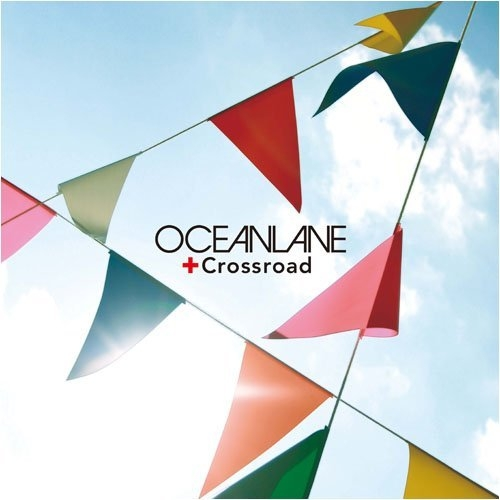

0:00
/
left
right
GALA - 追梦赤子心
假使窗外亦有明月相随，然后你用你的眼神的晶莹，换取月光皎洁的洒脱，以一眨一眨的姿态来评判一闪一闪的定义。
收听 »
蔡健雅 - 红色高跟鞋
其实，无外乎只是月的色遮盖了星的辉。
收听 »
汪峰 - 无处安放
不解的永远都会是纠结的你，而不会是本无怨念的月。
收听 »
许巍-生活不止眼前的苟且
纵然还有千丝万缕的忧伤，也不比你放下所有怨念来得舒畅。
收听 »
赵雷-不开的唇
只知盲目努力的人，永远不知方向在何处，不知道为何而做。
收听 »
李宇春-再不疯狂我们就老了
拥有格局的人却不一样，这样的人早早就谋划好了自己要走的路，他们闪耀在人生的舞台上，仿佛天生的王者，拥有自带光环，走到哪里都是众人所关注的对象。
收听 »
李宇春-蜀绣
学着看大事的格局，没有可以培养，但不要选择安逸，一旦沉溺于自我安排的假象之中，生活便再也没有了波澜，再也看不到那些风光霁月，再也没有了远方的景色，混沌如死水，静匿等待。
收听 »
杨宗纬-空白格
格局是什么？是一个人对未来的规划与设想，正如一句话所说：“生活不只有眼前和苟且，还有诗和远方。”拥有格局的人知道自己想要的是什么，并且会为之奋斗和努力。
收听 »
赵照-当你老了
我想说，就算我失败了， 我还是我，我不在乎。
我想说，就算我做错了， 我依旧在，我还可以。
我想说，就算我骄傲过，我还是我 ，我想哭去。
收听 »
五月天-咸鱼
爱不一定要永远。曾经拥有的也许会是你一生最美好的回忆。因为我爱过，所以不会成敌人；因为我伤过，所以不会做朋友；那我们只能是最熟悉的陌生人。爱过知情重，醉过才知酒浓。
收听 »
赵雷-赵小雷-不开的唇
爱情是一个人对另一个人习惯的认同，去改变、去迁就。
收听 »
朴树-送别
悠长的雨巷，古色古香，魂牵梦萦的依然是丁香一样的姑娘。
收听 »
许巍-灿烂
一首凄婉深情之歌谣，扰乱了晚春数日之心绪。
收听 »

许巍-生活不止眼前的苟且
多少情真，多少醉，一剪寒梅；细雨翡翠，芳菲菲，魂牵梦回。
收听 »
周杰伦-七里香
相信爱，不要相信爱情，爱是瞬间的美，情是永恒的痛，灿若烟花，稍纵即逝，那一刻，我知道，我错了。
收听 »
赵大格 - 我在人民广场吃炸鸡
时过境迁，等到往事经年也早已烟消云散，再见也是初见，正如我与他的重逢，即使是一座城市里相遇，也只是淡然一笑，转身擦肩。感情一旦过了期限，便会失效，何况是一段无果的情，断了也就断了。
收听 »
张杰-突然想爱你
今生，能否与我共伞相依？在烟雨朦朦中，婉约成一脉温香。在那馥郁幽香里，在人生漫漫的长路上，吟一首高山流水，奏一曲千古绝唱，墨守时光，源远流长。
收听 »
许巍-家
淡淡的风里，是淡淡的呼唤。生命，本是尘埃，也许，每个人都注定要经历太多的欢乐和烦忧，倾其一生，独舞苍穹，对美好的渴望，也便演绎了尘世间的千呼万唤。
收听 »
王菲-流年
经年过往，天各一方，浅浅相遇，深深珍藏，珍藏的不是那个人，而是一种经历，教会了我成长。谢谢那些来过的人，我会记得，但不会留恋。过去的过去，未来的才能到来，所以，你看，我现在很好。
收听 »
王菲-匆匆那年
人生有苦有乐，我知道，爱情不能永恒，我知道，太在乎了，会受伤，我也知道。
收听 »
王菲-传奇
心中始终藏着你的影子，在我的心上打着结。
收听 »
逃跑计划-世界-夜空中最亮的星
任今生荒唐也罢，哀怨也罢，再也无法解开。
收听 »
卢巧音-好心分手
岁月苏醒在泛黄的照片里，多少年轮编织了多少皱纹。
收听 »
林忆莲-为你我受冷风吹
岁月无痕沧桑有迹，回首身后跌跌撞撞的经历，总有一些光阴难以磨灭的东西留在我们记忆里，有苦涩，有欢笑，有感动，有泪水……
收听 »
华晨宇-烟火里的尘埃
这些情感的精髓，牢牢地占据着我们灵魂的最深处，总不经意地在我们的精神世界里如蝶般翩纤舞蹈。当我们蓦然回首那些曾经的点滴碎片，原来仍然如铅般沉重压在心头，令人窒息。
收听 »
古巨基-情歌王
我欲举杯邀明月，对酒当歌，人生几何？人生之路苦短漫长，红尘琐事千般无奈，何人可以看破红尘，何人可以纵横人世，何人可以快意恩仇。
收听 »
黄雨勋-听见下雨的声音
岁月婆娑着那憔悴的脸庞，少了那时的稚嫩，多了一分坚毅。不知何时，心里多了一泓悲伤的泉眼，不停的灌溉着干枯了的记忆，丰满着昔时的喜怒哀乐。
收听 »
left
right
×